Favourite
Favourite


Italy is the country with the largest number of UNESCO sites in the world. The natural, cultural and scenic heritage is invaluable. It has 61 declared assets. This enormous wealth is made up of natural areas, archaeological sites, tourist destinations and other masterpieces, to be visited and explored.
Unesco 16 search results
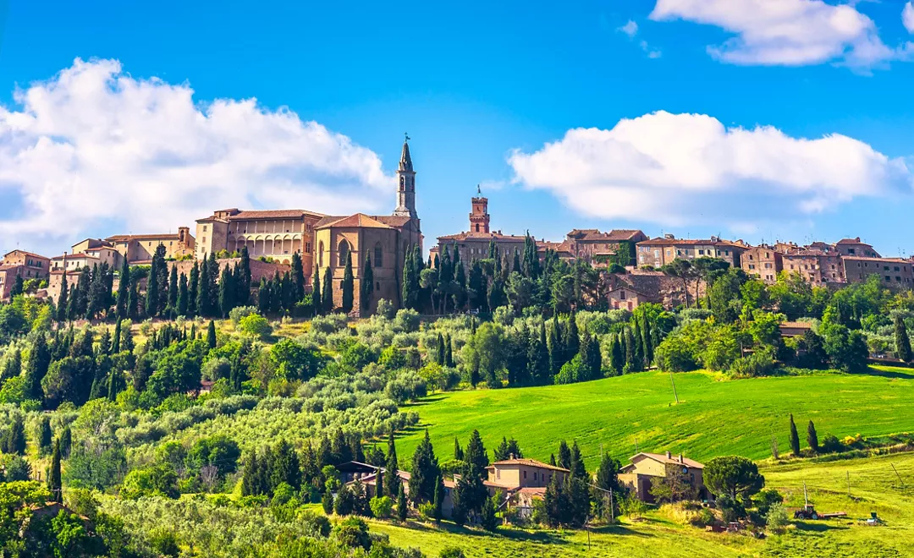
Pienza, the Ideal City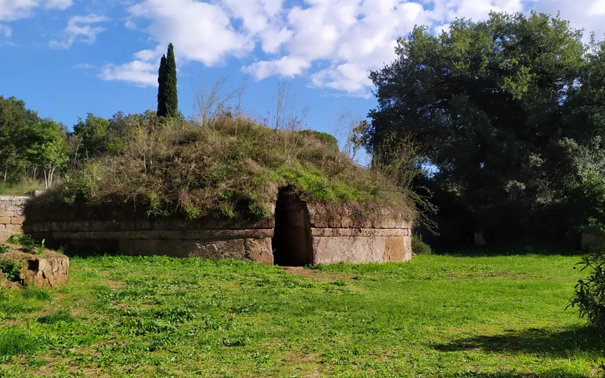
The Necropolises of Tarquinia and Cerveteri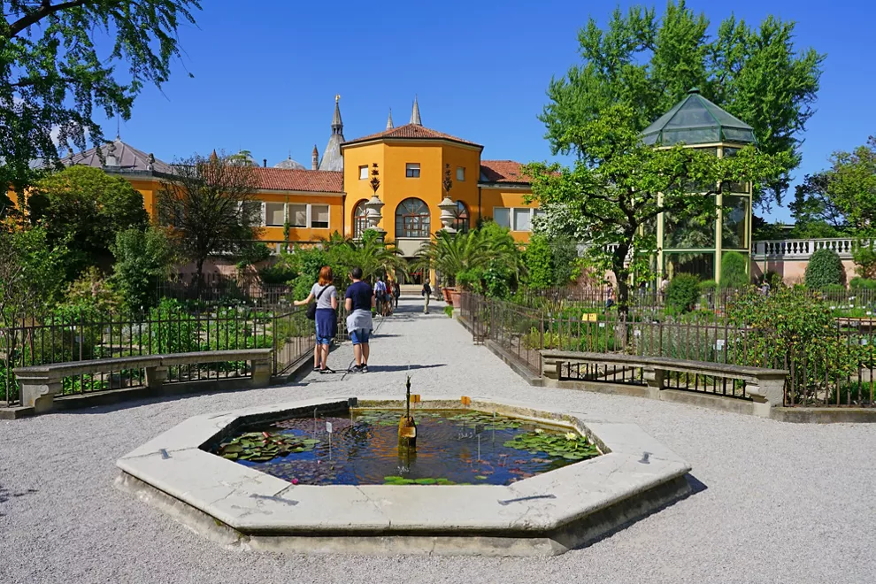
Padua’s Botanical Garden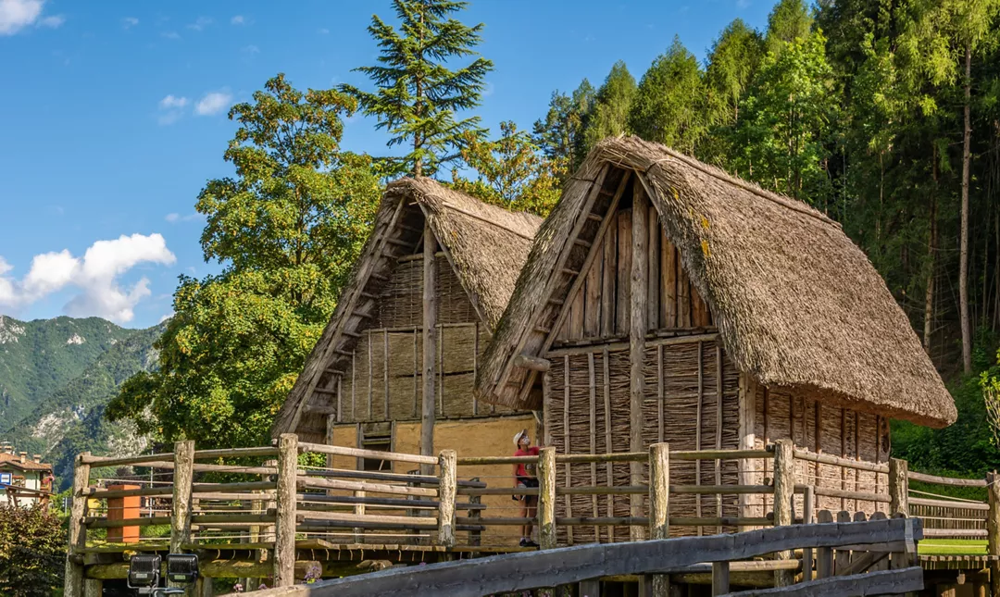
Prehistoric pile-dwelling sites in the Alps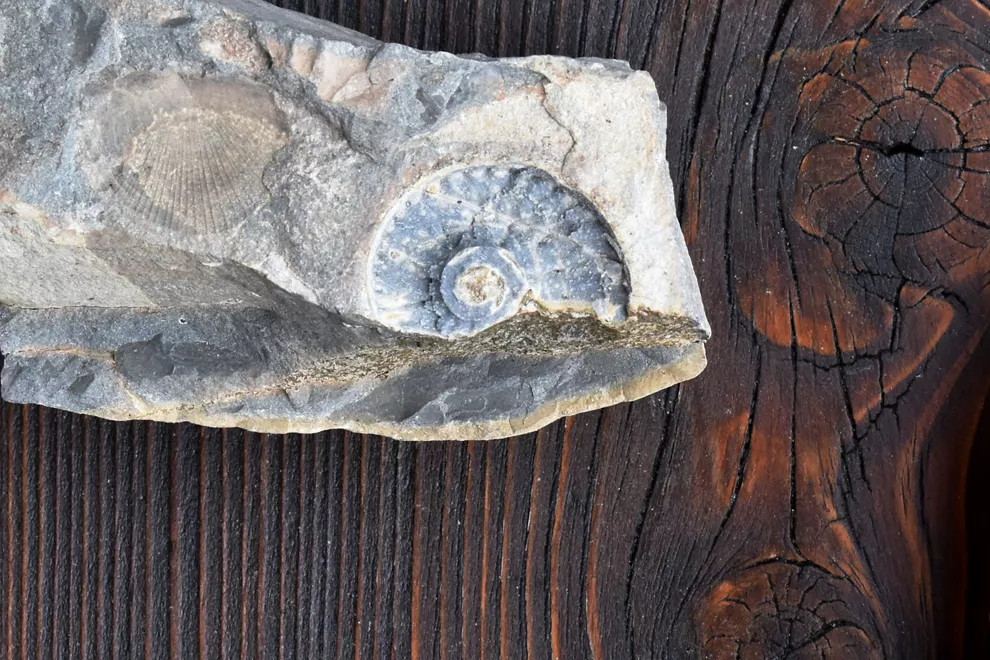
Monte San Giorgio and Its Fossils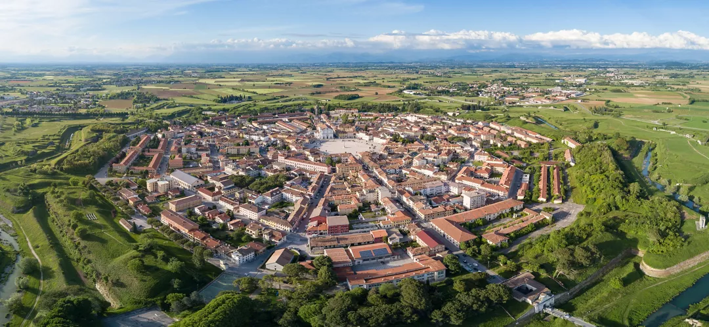
The Venetian Works of Defence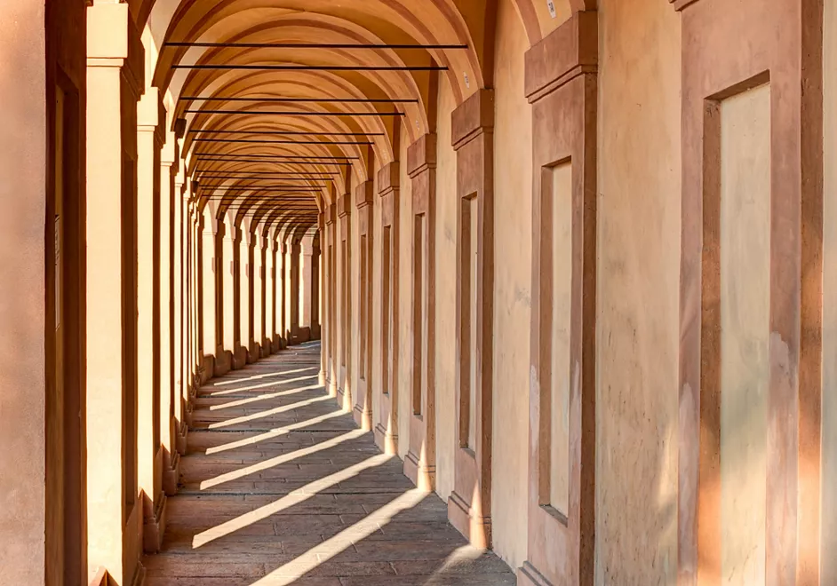
The Porticoes of Bologna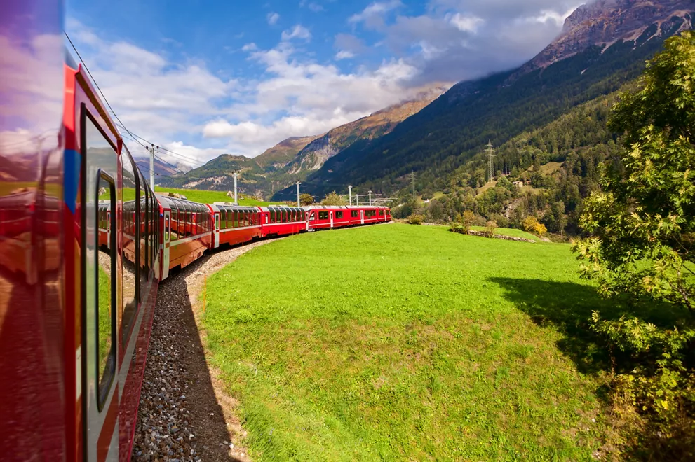
Rhaetian Railway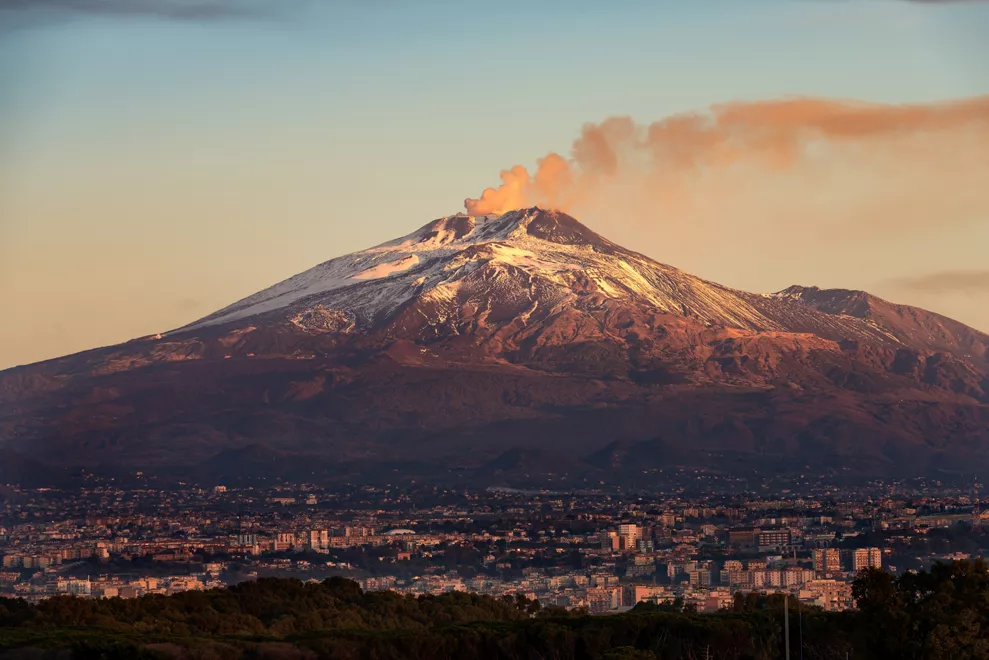
Mount Etna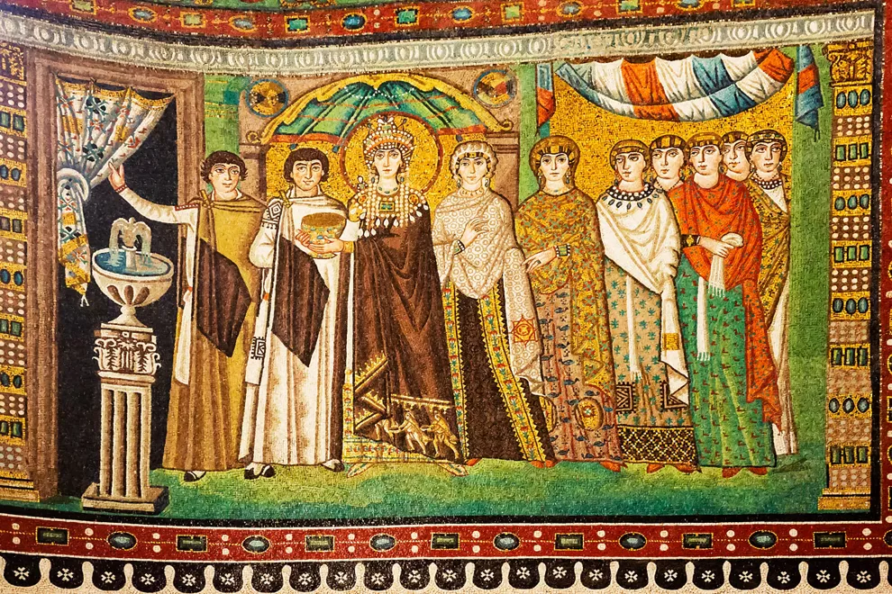
Ravenna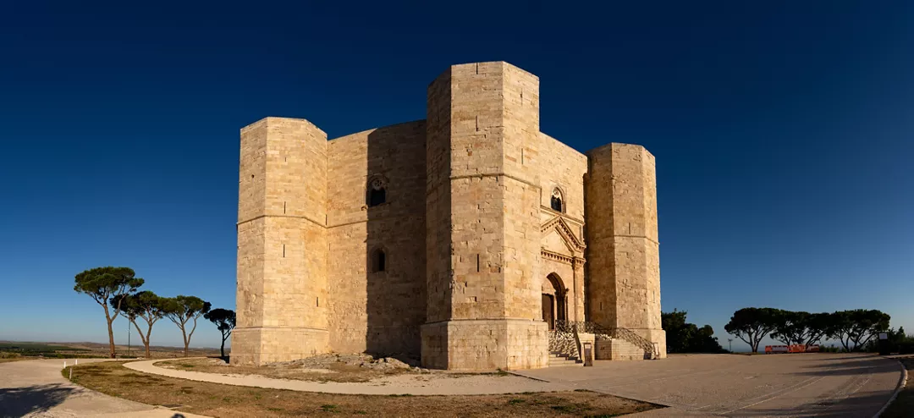
Castel del Monte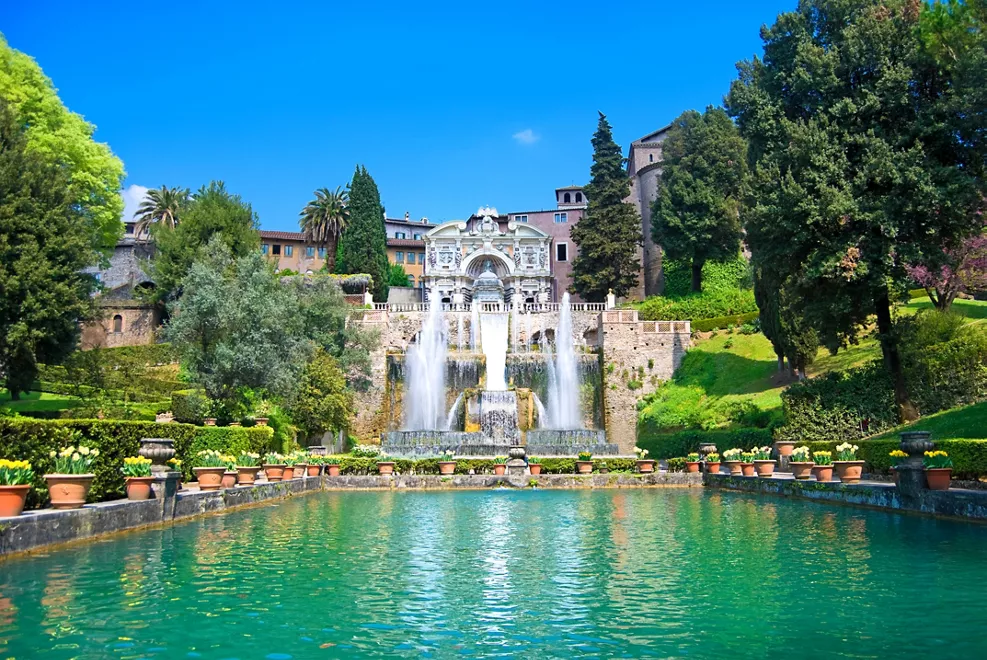
Villa d'Este